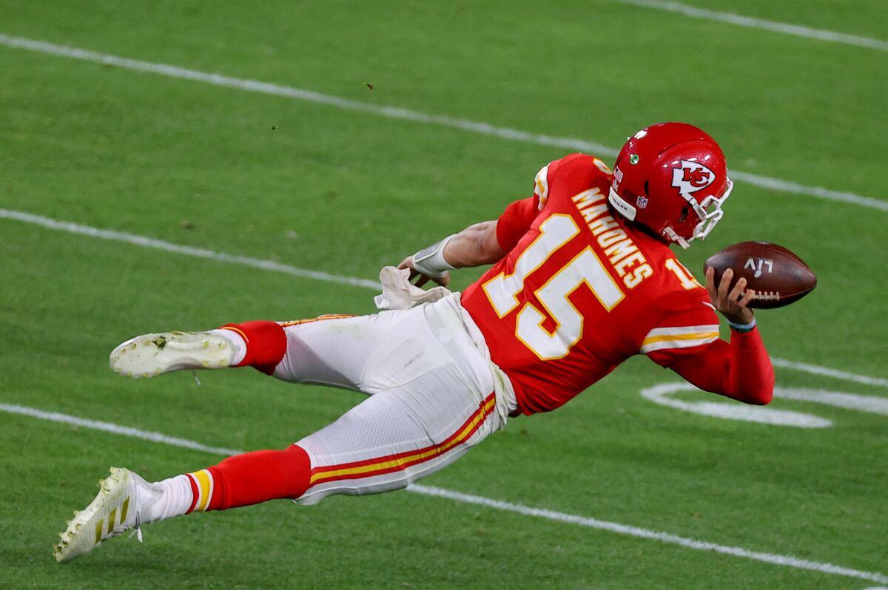
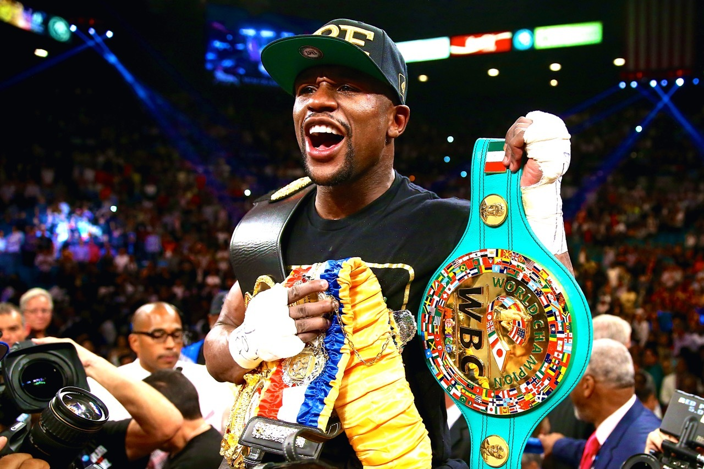

<!DOCTYPE html>

<html lang="en">
<head>
    <meta charset="UTF 8">
    <meta http-equiv="X-UA-Compatible" content="IE=edge">
    <meta name="viewport" content="width=device-width, initial-scale=1.0">
    <title>About Me</title>
    <style>
        nav{
            text-align: center;
        }
        
        p{
            color:white;
            font-size: large;
        }

        h1{
            color:white;
        }

        nav a {
            display:inline-block;
            color: orange;
            font-style: Normal;
            font-weight: bold;
            font-size:xx-large;
            text-decoration: none;
            margin: 0px;
            padding: 16px 28px;
            transition: color 0.3s;
        }
        html{
            height:100%
        }
        body{
            background-image: url(back-ground.jpg);
            min-height: 100%;
        }
        img{
            width:250px;
            height: 200px;
            margin: 5px;
            border: 6px;
        }
        footer{
            text-align: center;
            margin-top: auto;
        }
    </style>
</head>
</html>

<body>
    <nav id="nav-bar">
        <a href="index.html">Home</a>--
        <a href="about-me.html">About Me</a>--
        <a href="journey.html">My Journey</a>
    </nav>
    <main>
        <h1>About Me:</h1>
        <p>
            My interest includes: working out, playing video games, socializing, and hiking.
            Over the years, I've grew a liking to become a basketball and football fan. My
            all-time favorite player would have to be Carmelo Anthony due to his ability to
            do what he wants and take the game over at will. He has since retired so now I root
            for Stephen Curry. As for football, it has to be Odell Beckham jr and Patrick Mahomes.
            I choose these two because they are two of the most entertaining to watch. I also believe
            that if anyone has a chance in being the best quarterback in NFL history, it would be
            Patrick Mahomes himself. I should also mention another athlete that deserves great praise
            for his greatness, but I dearly admire him because of his mindset. The athlete I speak of
            is Floyd Mayweather. While I am no athlete, I believe if I apply the principles of practicing
            perfect form and repetition to my personal life, then it'll only be a matter of time where
            I'd be proficient in the areas I was challenging myself.
        </p>
        
        
        
        
        
        <footer> 
            <p>Phone:(475)439-4933<br>Email: kirbykidd46@gmail.com</p>
        </footer>

    </main>    

</body>